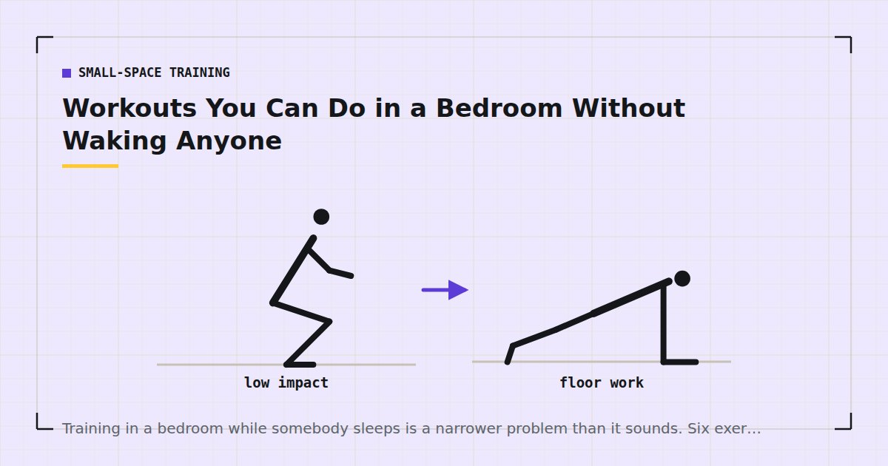

Small-Space Training
Workouts You Can Do in a Bedroom Without Waking Anyone
Training in a bedroom while somebody sleeps is a narrower problem than it sounds. Six exercises make no noise at all, and the rest of it is about the floor and the light.

Training in a bedroom while someone sleeps comes up more often than you would expect: shift workers, parents of small children, people whose only reliable window is before the household wakes up.
The constraint is real but narrow. Once you know what actually disturbs a sleeping person, the exercise selection becomes obvious.
What actually wakes people
Four things, in rough order of how reliably they do it.
Sudden noise. Not steady noise. A dropped hand on a floorboard wakes people; consistent quiet breathing does not. This is why slow controlled movement matters more than absolute silence.
Light. Frequently more disruptive than sound, and almost always underestimated. A phone screen at full brightness in a dark room is a genuine problem.
Bed movement. If any part of your session involves contact with the bed — using it for incline push-ups, or elevating your feet — you are transmitting movement directly to the person on it. Rule this out entirely.
Vibration through the floor. On a suspended timber floor, even non-impact movement can transmit to the bed frame. Training on a rug near a supporting wall reduces it — see exercise mats for noise reduction.
Six silent exercises
1. Dead bug. Slow, controlled, on the floor. Silent by nature.
2. Glute bridge. On the floor with a one-second squeeze. No sound at all.
3. Split squat, holding a wall. Standing, controlled, feet placed rather than stepped. Keep the movement slow and the foot placement deliberate.
4. Wall or counter push-up. Not a bed push-up. A wall works perfectly and transmits nothing.
5. Side plank. Static, silent, and covers a trunk function most routines miss.
6. Wall sit. Completely static. Thirty to sixty seconds.
All six are drawn from the categories in the silent ab workout and standing workouts, chosen here for zero noise rather than for any other constraint.
The session
Fifteen minutes. No warm-up jumping or marching — start with the first set of each exercise done deliberately easily instead.
- Split squat holding a wall — 3 × 10 each leg
- Wall push-up — 3 × 15–20
- Glute bridge — 3 × 15 with a pause
- Dead bug — 3 × 8–10 each side
- Side plank — 2 × 30 seconds each side
- Wall sit — 2 × 40 seconds
Rest sixty seconds between sets. Since the loads here are light, proximity to failure is what produces adaptation,1 so take the last set of each close — quietly.
What to avoid entirely
- Anything using the bed. Incline push-ups on the mattress, feet elevated on the bed, split squats with the rear foot on it. All transmit directly to a sleeping person.
- Anything with a foot leaving the floor. Obvious, but includes fast marching and step-backs done at pace.
- Plank shoulder taps and mountain climbers. Both involve setting hands down repeatedly. Even done gently, on a timber floor at 5am, they are audible.
- Anything travelling. Bear crawls, skater steps. Bedrooms rarely have the floor for them anyway.
- Music or a video, even on headphones. Your own movement in response to a timer is quieter than you reacting to a video, and the screen light is a problem in itself.
The bed is not equipment. Anything that touches it wakes the person on it.
Setting up the room
Light. Use the dimmest usable light, and point a lamp at a wall rather than into the room. If you need a timer, set your phone to its lowest brightness and turn it face down between sets.
Surface. A rug or mat, positioned near a supporting wall rather than in the middle of the floor. Both reduce transmitted vibration.
Position. As far from the bed as the room allows, and ideally not on the same run of floorboards, though that is often impossible in a small room.
Prepare the night before. Mat out, clothes to hand. Fumbling around in the dark for kit makes more noise than the workout does, and it is also the friction that stops early sessions happening — the mechanism is in how to stick to a home workout habit.
Timing and the sleep question
One thing worth weighing honestly. If your only training window requires getting up substantially earlier, you are trading sleep for exercise, and that is not always a good trade.
Sleep has documented effects on training performance and recovery,2 and cutting an hour of sleep to gain a fifteen-minute session may leave you worse off on both counts. If you are already sleeping less than you need, the better move is usually to find the time elsewhere — the options are in the weekly home workout schedule and morning vs evening workouts.
Where this session earns its place is when the window already exists: you wake before the household anyway, or your shift pattern puts you home at an hour when everyone else is asleep. In that case fifteen quiet minutes is genuinely free training, and the case for it is straightforward.
If you share a room rather than a bed
Housemates and flatshares present a slightly different problem. The person you might wake is behind a wall rather than a metre away, which changes what matters.
Airborne noise through an internal partition wall is usually the issue rather than floor vibration. Modern stud walls transmit voices and sharp sounds readily and low-frequency thumps rather less, which inverts the usual advice: your breathing during a hard wall sit may carry further than a controlled glute bridge does. Keep the exercise selection as above and simply avoid anything where you would need to exhale forcefully.
The floor question changes too. In a shared house you are often training above a communal room rather than a bedroom, which means the hours that matter are different — a session at seven in the morning over an empty living room is fine, and the same session over someone's bedroom is not. Knowing which room is below you is worth thirty seconds of thought and removes most of the guesswork.
Is a fifteen-minute quiet session worth doing?
Yes, with the usual caveat about expectations. Six exercises at three sets each is a genuine training dose, and it covers four of the five movement patterns — only pulling is missing, because door frame rows involve a door that will almost certainly creak.
What matters more is that it is repeatable. Weekly training volume drives adaptation rather than what any single session contains,3 so three quiet fifteen-minute sessions a week accumulate a real weekly total. Adult guidance asks for muscle-strengthening work on two or more days a week,4 and this clears that comfortably.
Add the pulling pattern separately whenever you have a window where noise is not a constraint — even one session a week of proper rowing work is enough to stop the imbalance developing. The options are in rows at home.
Where to go next
For the complete approach to training without disturbing anyone, see quiet home workouts. For shift patterns specifically, see building a routine around shift work.
Frequently asked questions
What exercises can I do quietly in a bedroom?
Split squats holding a wall, wall push-ups, glute bridges, dead bugs, side planks and wall sits are all effectively silent. Avoid anything using the bed, anything where a foot leaves the floor, and anything involving setting hands down repeatedly.
How do I work out without waking my partner?
Avoid sudden noise rather than aiming for total silence, keep light to a minimum and pointed at a wall, never use the bed as equipment, and train on a rug near a supporting wall rather than in the middle of the floor.
Can I use the bed for exercises?
Not if someone is sleeping on it. Incline push-ups on the mattress, elevating your feet, or resting a rear foot on it all transmit movement directly to the person there. Use a wall or the floor instead.
Is it worth getting up early to work out?
Only if the window already exists. Cutting an hour of sleep for a fifteen-minute session is often a poor trade, since sleep has measurable effects on training performance and recovery. If you already wake before the household, it is genuinely free training.
Why do mountain climbers wake people up?
Because they involve setting the hands down repeatedly, and sudden repeated contact is what wakes sleeping people rather than steady noise. On a suspended timber floor the vibration also carries to the bed frame.
Sources and further reading
- Schoenfeld BJ, Grgic J, Ogborn D, Krieger JW. “Strength and Hypertrophy Adaptations Between Low- vs. High-Load Resistance Training: A Systematic Review and Meta-analysis.” Journal of Strength and Conditioning Research, 2017;31(12):3508–3523. PubMed.
- Bonnar D, Bartel K, Kakoschke N, Lang C. “Sleep Interventions Designed to Improve Athletic Performance and Recovery: A Systematic Review of Current Approaches.” Sports Medicine, 2018;48(3):683–703. PubMed.
- Schoenfeld BJ, Ogborn D, Krieger JW. “Dose-response relationship between weekly resistance training volume and increases in muscle mass: A systematic review and meta-analysis.” Journal of Sports Sciences, 2017;35(11):1073–1082. PubMed.
- World Health Organization. WHO Guidelines on Physical Activity and Sedentary Behaviour. 2020.
- NHS. Strength and Flex exercise plan.
Comments
Comments are not enabled yet. Add a hosted comment embed (Disqus, Commento, Giscus) inside this container when you are ready.